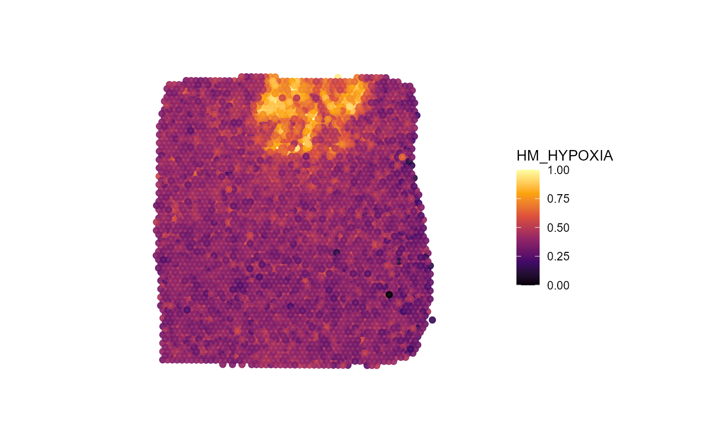
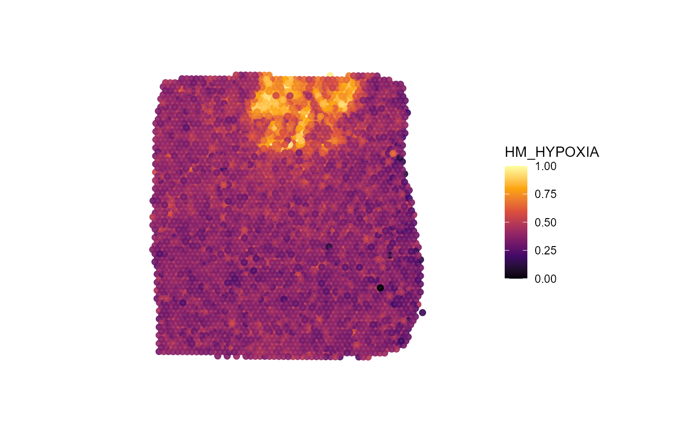

Image Annotations
spata-v2-image-annotations.Rmd1. Prerequisites
Please make sure to be familiar with the following vignettes before reading this tutorial.
2. Introduction & overview
This tutorial describes how to use SPATA to integrate the histology of your sample into your analysis.
3. The HE-image
The HE-image of your spatial sample is stored in slot @images of the spata2 object.
Sample T313 is a glioblastoma with a prominent necrotic area in it’s
center.
plotImageGgplot(object_t313)Fig.1 The HE-image.
To analyze the necrotic area we’ll use SPATA2 image annotation system.
3. Creating image annotations
Image annotations are structures in histology image whose spatial
extent is captured in form of a polygon and saved in the
spata2 object. For more details on how this is translated
into R-code see below. To add image annotations to the
spata2 object you can make use of the function
createImageAnnotations(). This function lets you access an
interactive application in which you can encircle the structure or area
you want to annotate.
# interactively
object <- createImageAnnotations(object = object_t313)
# or manually
data("image_annotations")
object <-
setImageAnnotation(
object = object_t313,
img_ann = image_annotations$`313_T`[["necrotic_center"]],
overwrite = TRUE
)Fig.2 The interface of createImageAnnotations()
Fig.3 Zooming options allow to inspect the HE-image in detail.
Fig.4 Encircling the area of interest.
The left plot Interaction is where the magic happens. The right plot is used for orientation if you want to zoom in and out. Double click on the left image to start the drawing process. Double click again to stop drawing. If you are using drawing mode Single click on ‘Highlight’ to highlight the encircled area, enter the tags you want to tag the annotation with, enter the ID with which you want to name the annotation and click on ‘Add Image Annotation’. If you are in drawing mode Multiple stopping the drawing immediately highlights the encircled area. This allows to quickly encircle multiple structures of the same kind that are tagged with the same tags (e.g. multiple small vessel). The tab on the right called ‘Added Image Annotations’ allows to visualize all image annotations saved so far.
Fig.5 Area is encircled and can be added as an image annotation.
Make sure to click on ‘Close application’ to return the
spata2 object containing the results.
4. Visualizing image annotations
To visualize the structures you have annotated use
plotImageAnnotations().
plotImageAnnotations(
object = object_t313,
ids = "necrotic_center",
expand = 0.5,
square = TRUE
)Fig.6 Simple visualization of image annotations.
The function ggpLayerImgAnnOutline() creates an
additional layer that can be added to other surface plots created with
ggplot2. This is useful if you want to visualize the extent of certain
histological structures in relation to certain features or gene
expression.
# ggpLayer*functions create standalone ggproto objects
# that can be used to customize other ggplots
layer_necrotic <-
ggpLayerImgAnnOutline(
object = object_t313,
ids = "necrotic_center",
fill = "gray",
alpha = 0.5
)
plotSurface(
object = object_t313,
color_by = "nCount_Spatial",
alpha_by = "nCount_Spatial",
transform_with = list(nCount_Spatial = log10),
display_image = TRUE
)
plotSurface(
object = object_t313,
color_by = "nCount_Spatial",
alpha_by = "nCount_Spatial",
transform_with = list(nCount_Spatial = log10),
display_image = TRUE
) +
layer_necroticFig.7 Add the extent of image annotations to surface plots.
5. Working with image annotations
SPATA2 offers several functions that allow to work and program with image annotations. For that we’ll use an example that contains many small image annotations and that is known to contain a highly segregated hypoxic area.
plotImageGgplot(object = object_t275)
plotSurface(
object = object_t275,
color_by = "HM_HYPOXIA",
display_image = FALSE
) +
ggpLayerFrameByImage(object_t275) 
Fig.8 Glioblastoma sample T275 with a prominent hypoxia region.
5.1 Image handling and plotting
We annotated five small vessel that we found in the HE-image using
createImageAnnotations() as well as a structure that we
assume to be an artifact. Note that the image annotations are provided
in the list image_annotations and that these annotations
are scaled for the low resolution image.
Arguments expand and square can be used to
specify how the cropped image sections are handled. Read the
documentation with ?plotImageAnnotations or
?getImageAnnotations for more information.
# load example list
data("image_annotations")
# set annotations
object_t275 <-
setImageAnnotations(
object = object_t275,
img_anns = image_annotations[["275_T"]],
overwrite = TRUE
)
# plot results (high resolution)
plotImageAnnotations(
object = object_t275,
ids = NULL, # no further specification of ids ..
tags = NULL, # ... and tags includes all image annotations
expand = 0.4, # expand the image
square = TRUE, # force the image into a square
display_subtitle = TRUE,
line_size = 1,
nrow = 2
)Fig.9 All image annotations of sample T275 one by one in high resolution.
For a visualization of many image annotations on a surface-ggplot you
can use ggpLayerImgAnnOutline().
plotImageGgplot(object = object_t275) +
ggpLayerImgAnnOutline(
object = object_t275,
line_size = 1,
line_color = "red"
)Fig.10 All image annotations of sample T275 projected on the whole image.
5.2 Using tags
Comparing the localisation of each image annotation from Fig.10 in Fig.11 it becomes apparent that we tagged vessel differently, depending on their position. The tagging system of image annotations can be used to conveniently extract and/or plot image annotations or information thereof. E.g. in Fig.5, the image annotation has been tagged with necrotic and center.
Input for argument tags specifies the tags of interest. Argument
test decides about how the specified tags are used to
select the image annotations of interest. There are three options:
Argument
testset to ‘any’ or 1: To be included, an image annotation must be tagged with at least one of the input tags.Argument
testset to ‘all’ or 2: To be included, an image annotation must be tagged with all of the input tags.Argument
testset to ‘identical’ or 3: To be included, an image annotation must be tagged with all of the input tags and must not be tagged with anything else.Argument
testset to not_identical or 4: To be included, an image annotation must not be tagged with the combination of input tags.Argument
testset to ‘none’ or 5: To be included, an image annotation
Note that the filtering process happens in addition to / after the
filtering by input for argument ids. This concept is exemplified in
Fig.12 with plotImageAnnotations() but works the same for
all other image annotation related functions that extract image
annotations.
# plot on the left
plotImageAnnotations(
object = object_t275,
tags = c("vessel", "in_hypoxia"),
test = "any", # annotations are kept as long as at least one of the tags fit's
expand = 0.4,
square = TRUE
)
# plot on the right
plotImageAnnotations(
object = object_t275,
tags = c("vessel", "in_hypoxia"),
test = "all", # to be be kept, all specified tags must be included in the image annoation
expand = 0.4,
square = TRUE,
ncol = 3,
nrow = 2
)Fig.12 Using tags to specify the image annotations of interest.
Further functions that might be of interest when it comes to integrate histological structures in the analysis or code writing:
# extracts the polygon data.frames that contains the border
getImgAnnOutlineDf(object = object_t275, tags = "vessel") %>%
dplyr::group_by(ids) %>%
dplyr::slice_sample(n = 6)## # A tibble: 30 x 4
## # Groups: ids [5]
## ids border x y
## <fct> <chr> <dbl> <dbl>
## 1 img_ann_1 outer 1133. 1658.
## 2 img_ann_1 outer 1126. 1644.
## 3 img_ann_1 outer 1121. 1655.
## 4 img_ann_1 outer 1132. 1659.
## 5 img_ann_1 outer 1127. 1666.
## 6 img_ann_1 outer 1122. 1652.
## 7 img_ann_2 outer 1254. 1667.
## 8 img_ann_2 outer 1253. 1670.
## 9 img_ann_2 outer 1263. 1641.
## 10 img_ann_2 outer 1261. 1633.
## # i 20 more rows
# although image annotations are primarily independent of
# barcode spots you might want to know which of the barcode spots
# are covered by certain annotations
getImgAnnBarcodes(object = object_t275, tags = "vessel")## [1] "GAAATACCTGCTGGCT-1" "TGGGCACGTTCTATGG-1" "ATCGGCAAGCAGTCCA-1"
## [4] "CTTCGATTGCGCAAGC-1" "GTGCCTGAGACCAAAC-1"6. The S4 ImageAnnotation class
Image annotations are abstracted in an S4 class named
ImageAnnotation. Use ?ImageAnnotation to read
the description.
# extracts single image annotations
img_ann <- getImageAnnotation(object = object_t275, id = "img_ann_1")
class(img_ann)## [1] "ImageAnnotation"
## attr(,"package")
## [1] "SPATA2"
slotNames(img_ann)## [1] "area" "id" "image" "image_info" "info"
## [6] "misc" "tags"
# extracts a list of image annotations
img_anns <- getImageAnnotations(object = object_t275, tags = "vessel", test = "any")
class(img_anns)## [1] "list"
map(img_anns, .f = class)## $img_ann_1
## [1] "ImageAnnotation"
## attr(,"package")
## [1] "SPATA2"
##
## $img_ann_2
## [1] "ImageAnnotation"
## attr(,"package")
## [1] "SPATA2"
##
## $img_ann_3
## [1] "ImageAnnotation"
## attr(,"package")
## [1] "SPATA2"
##
## $img_ann_4
## [1] "ImageAnnotation"
## attr(,"package")
## [1] "SPATA2"
##
## $img_ann_5
## [1] "ImageAnnotation"
## attr(,"package")
## [1] "SPATA2"